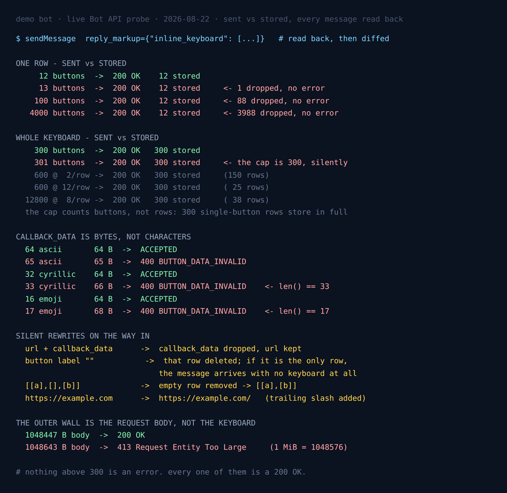

Telegram Stores 12 Inline Buttons Per Row and 300 Total
Five days ago I published a post about inline keyboard limits whose title said 1000 buttons OK. That number was wrong, and the way it was wrong is more useful than the number itself.
It came from a status code. I had sent a thousand buttons in a single row, the API had returned 200 OK, and I wrote down accepted. What I never did was look at the message afterwards. When I finally did, the row had twelve buttons in it. The other 988 were gone, and nothing anywhere in the response had mentioned them.
So this is the same probe run properly: every keyboard sent to a real chat, the reply_markup read back off the returned message, and the two compared field by field. The corrected numbers are smaller and much stranger than the ones I published.
- A row holds 12 buttons. Send 13, or 100, or 4000 — you get
200 OKand 12 stored, every time. - A keyboard holds 300 buttons. Not 300 rows: 300 buttons, however you arrange them.
- Neither cap produces an error. There is no warning field, no truncation flag, no changed status code.
- The wall that does error is somewhere else entirely — a 1 MiB request body, measured here to the byte.

200 OK; the only genuine error in the whole picture is the 413 at the bottom.The setup
One throwaway bot, nothing in production. Two recorded passes of 73 and 46 API calls, then four follow-up passes to pin the boundaries down. Every keyboard that the API accepted was sent to a real private chat, read back, and the message deleted immediately afterwards, because — as the last section explains — a chat that does not exist cannot tell you the truth about limits.
The probe is standard library only. Each verdict quoted below came out of a run on 22 August 2026.
The row cap is 12, and it truncates in silence
The InlineKeyboardMarkup documentation describes the field as an array of arrays of buttons and puts no number on either dimension. The number on the inner array is twelve.
| Buttons sent in one row | Response | Buttons stored |
|---|---|---|
| 12 | 200 OK | 12 |
| 13 | 200 OK | 12 |
| 100 | 200 OK | 12 |
| 4000 | 200 OK | 12 |
This is the cap that bites in practice, because twelve is small enough to reach by accident and large enough that nobody tests past it. A row built from a list — time slots, pages, languages, a set of tags — sits comfortably under twelve during development and quietly loses its tail in production the first time a user has thirteen of something.
Note that the truncation is not a rendering artefact. The buttons are not present-but-hidden, waiting for a wider screen. They are absent from the stored message: the API returns a keyboard with twelve buttons in it, and a callback_query for the thirteenth can never arrive because the thirteenth does not exist.
The keyboard cap is 300, and it counts buttons rather than rows
My first guess was that the outer array had its own limit, parallel to the inner one. It does not. What exists is a budget of 300 buttons that you may spend on any shape you like.
| Keyboard sent | Stored |
|---|---|
| 300 rows × 1 button | 300 rows, 300 buttons |
| 301 rows × 1 button | 300 rows, 300 buttons |
| 600 buttons at 2 per row | 150 rows, 300 buttons |
| 600 buttons at 12 per row | 25 rows, 300 buttons |
| 12,800 buttons at 8 per row | 38 rows, 300 buttons |
Three hundred single-button rows are stored in full, so there is no row limit hiding underneath at 100 or 150. Change the width and the row count moves to whatever divides 300 — 150 rows of two, 25 rows of twelve — while the button total stays nailed to 300.
The two caps also compose in the direction you would hope. Sending 600 buttons at 13 per row gives 25 rows of 12: each row is first truncated to twelve, and the 300 budget is then spent on what survived, not on what was sent. The result is that an over-wide keyboard loses buttons twice, and the arithmetic that predicts how many you keep is not the arithmetic of what you sent.
callback_data is measured in bytes, and your language hides it
The InlineKeyboardButton docs are precise here and almost everyone misreads them anyway: callback_data is 1-64 bytes. Bytes. Not characters.
| callback_data | len() | Bytes | Verdict |
|---|---|---|---|
64 × a | 64 | 64 | accepted |
65 × a | 65 | 65 | 400 BUTTON_DATA_INVALID |
32 × я | 32 | 64 | accepted |
33 × я | 33 | 66 | 400 BUTTON_DATA_INVALID |
| 16 × emoji | 16 | 64 | accepted |
| 17 × emoji | 17 | 68 | 400 BUTTON_DATA_INVALID |
Read the middle rows again. A string of 33 characters is refused while a string of 64 characters is accepted. Any length check written as len(data) <= 64 in Python — or .length in JavaScript, which counts UTF-16 code units and has its own disagreement with the bytes — passes the exact payloads the API rejects.
This is a localisation bug waiting for a specific user. callback_data=f"city:{name}" is fine for every Latin city name you test with and dies on a Cyrillic or Greek one, and it dies at the API rather than in your code, so the traceback points at the send call and not at the string that caused it. The fix is one character wide: check len(data.encode()), not len(data).
A related trap in the same field. An empty callback_data is not treated as a short string, it is treated as an absent field — and the resulting error is “Text buttons are unallowed in the inline keyboard”, which describes a button with no action at all. If you see that message while staring at code that clearly sets callback_data, the value is an empty string.
Half of what a fake chat accepts, a real chat refuses
In the earlier post I found that some Bot API errors arrive before Telegram resolves the chat, which makes chat_id=1 look like a free keyboard linter: no test user, no spam, no consent required. That finding is real, and I then leaned on it much too hard.
Sixteen cases passed the cheap check. Eight of them were refused by a real chat.
| Case | Against chat_id=1 | Against a real chat |
|---|---|---|
callback_data 65 bytes | passed | 400 BUTTON_DATA_INVALID |
callback_data 66 bytes | passed | 400 BUTTON_DATA_INVALID |
callback_data 128 bytes | passed | 400 BUTTON_DATA_INVALID |
callback_data 68 bytes | passed | 400 BUTTON_DATA_INVALID |
url: "javascript:alert(1)" | passed | 400, invalid URL |
url: "/foo" | passed | 400, URL host is empty |
web_app over http | passed | 400, only HTTPS links are allowed |
pay: true, not an invoice | passed | 400 BUTTON_TYPE_INVALID |
The pattern is clean once you see it. The early layer is a parser: it answers questions about the shape of the request — is this JSON, is this an array, does this button have an action field — and it can answer them without knowing who the message is for. Everything that is a limit or a policy lives behind chat resolution.
So a bogus chat ID will tell you that your keyboard builder emitted a malformed button, and it will cheerfully wave through the oversized callback_data that is going to break you in production. It is a syntax check that looks like a validator. If you were planning to lint keyboards in CI this way — I was — it catches roughly the half of the problems you would have caught yourself.
One detail worth carrying: the javascript: URL is refused with “Wrong port number specified in the URL”. The parser reads everything after the first colon as a port, so the message names the wrong problem entirely. It is the second time that string has come up in this cluster, and it is still a bad thing to match on.
Telegram in Production
The measured limits, the failure modes and the boilerplate that survives them: escaping, rate limits, update queues and webhook handling, in one pack.
Get the pack — $19Four rewrites that happen on the way in
Truncation is not the only thing done to a keyboard between sendMessage and storage. Reading the markup back turned up four more edits, all silent.
A button with both url and callback_data loses the callback
Sent a button carrying both, the API stores only the url. The response is 200 OK and the button looks right to the user; it simply opens a link instead of firing the handler you wrote, and the handler is never called by anything. This is the most dangerous item on the list, because a keyboard builder that sets a default callback_data on every button and then adds a url to some of them will produce exactly this and never report it.
An empty label deletes its row
A button whose text is "" does not raise an error. Its row is removed. Send three rows where the first has an empty label and two are ordinary, and the stored keyboard has two rows. Send a keyboard whose only button has an empty label and the message arrives with no keyboard at all — still 200 OK, still a normal Message, just nothing to press.
A missing translation key that renders as an empty string is enough to do this. A label of " ", one space, survives intact, which means the difference between a keyboard and no keyboard can be one character of whitespace in a locale file.
Empty rows are dropped, unknown fields are dropped
[[a], [], [b]] stores as [[a], [b]], so a row-builder that emits an empty row for a filtered-out group is harmless. Unrecognised keys on a button object are stripped without complaint too — useful to know before you try smuggling your own metadata through.
URLs come back normalised
https://example.com is stored as https://example.com/. Trivial on its own, but it breaks the obvious way of detecting everything else on this page: if you compare the stored markup to what you sent and assert equality, the trailing slash makes every URL button a false positive. Compare fields you care about, not whole objects.
The only real error is 1 MiB, and it is the request, not the keyboard
Since no keyboard size produces an error, I went looking for what does. Sending ever-larger keyboards, the first genuine refusal appeared at roughly 15,000 buttons — and it was HTTP 413 Request Entity Too Large, which is a statement about the request, not the markup.
Isolating payload size as the only variable brackets it precisely:
1048447 B body -> 200 OK
1048643 B body -> 413 Request Entity Too Large
1 MiB = 1048576 B129 bytes under the line passes, 67 bytes over it fails. The cap is one mebibyte of request body, and it is shared by everything in the request — text, keyboard, every other parameter — rather than belonging to reply_markup.
The 413 arrives as well-formed Bot API JSON ({"ok": false, "error_code": 413, "description": "Request Entity Too Large"}), so ordinary error handling parses it rather than choking on an HTML error page. That is a small kindness worth knowing about, since a 413 from a reverse proxy usually is not JSON.
What to do with this
Four things, in the order they will save you time:
- Cap your rows at 12 and your keyboards at 300 in your own builder, and raise your own error when a caller exceeds either. The API will not tell you, so this has to be your check.
- Measure
callback_datain bytes.len(data.encode()). If you accept user-supplied text into that field at all, truncate on bytes or hash it and keep a lookup. - Paginate rather than truncate. 300 buttons is generous for a real interface, but a list that can exceed it will, and the failure is invisible. Page the list and the ceiling stops mattering.
- Read the markup back at least once in your test suite. Not the status code — the
reply_markupon the returnedMessage. Every finding on this page, including the one that corrected my own headline, is invisible from a status code.
That last point is the whole lesson, and I had to learn it twice. A 200 OK from the Bot API means the request was accepted. It does not mean the thing you sent is the thing that now exists.
FAQ
How many buttons can a Telegram inline keyboard have?
Three hundred in total and twelve per row, both enforced by silent truncation. 301 buttons store as 300; 13 buttons in a row store as 12. The total counts buttons rather than rows, so 300 single-button rows are kept in full.
Why does my inline keyboard lose buttons?
It went over 12 in a row or 300 overall and was truncated without an error. The call returns 200 OK and a normal Message. Compare the reply_markup on the returned message with what you sent — that difference is the only signal you get.
Is callback_data limited in bytes or characters?
Bytes: 64 UTF-8 bytes. 64 ASCII characters pass, 33 Cyrillic characters (66 bytes) and 17 emoji (68 bytes) are both refused with BUTTON_DATA_INVALID. Check len(data.encode()).
What happens if a button has both url and callback_data?
It is accepted and the callback_data is discarded. The stored button carries only the url, so the callback handler never fires and nothing in the response says why.
Can I validate an inline keyboard against a fake chat ID?
Only the shape of it. Parse errors precede chat resolution; limits and policies follow it. Eight of sixteen cases that passed against chat_id=1 were refused by a real chat, including every over-length callback_data and every bad URL scheme.
What is the maximum request size for the Bot API?
One mebibyte. 1,048,447 bytes was accepted and 1,048,643 bytes returned HTTP 413, bracketing 1,048,576. It applies to the whole request body, not to reply_markup alone, and the 413 comes back as parseable Bot API JSON.
Does an empty button label cause an error?
No — it removes the row. If that row was the only one, the message arrives with no keyboard at all, still as a 200 OK. A single space survives, so a missing translation string is enough to delete a keyboard.
More measurements from the same bot: which errors arrive before Telegram checks your chat exists — the post this one corrects — plus the 100-entity ceiling and the rewrites around it and what the 4096-character limit actually counts.
← Back to Blog